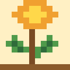

Little Roots
Little Roots
หมวดหมู่: พืชสมุนไพร / Medicinal
มีหน้าข้อมูลแล้ว 2 ชนิด จากแผน 25 ชนิด
สมุนไพรใกล้ตัวในครัวเรือน
สมุนไพรในตำรายาแผนไทย

พืชเพื่อสุขภาพในอาหารและเครื่องดื่ม
หมู่นี้จะเพิ่มข้อมูลพืชในชุดถัดไป
รายชื่อทั้งหมดในหมวดนี้
ก
- กระชาย (กำลังจัดทำ)
- กระเจี๊ยบแดง (กำลังจัดทำ)
- กะเพรา
- กานพลู (กำลังจัดทำ)
ข
- ขมิ้นชัน
- ขลู่ (กำลังจัดทำ)
- ขิง (กำลังจัดทำ)
- ขี้เหล็ก (กำลังจัดทำ)
- ข่า (กำลังจัดทำ)
ช
- ชุมเห็ดเทศ (กำลังจัดทำ)
ด
- ดีปลี (กำลังจัดทำ)
ต
- ตะไคร้ (กำลังจัดทำ)
บ
- บัวบก (กำลังจัดทำ)
ฝ
- ฝาง (กำลังจัดทำ)
พ
- พญายอ (กำลังจัดทำ)
ฟ
- ฟ้าทะลายโจร (กำลังจัดทำ)
ม
- มะขามป้อม (กำลังจัดทำ)
ย
- ย่านาง (กำลังจัดทำ)
ว
- ว่านชักมดลูก (กำลังจัดทำ)
- ว่านหางจระเข้ (กำลังจัดทำ)
ส
- สะเดา (กำลังจัดทำ)
ห
- หญ้าหนวดแมว (กำลังจัดทำ)
อ
- อัญชัน (กำลังจัดทำ)
เ
- เพชรสังฆาต (กำลังจัดทำ)
ไ
- ไพล (กำลังจัดทำ)